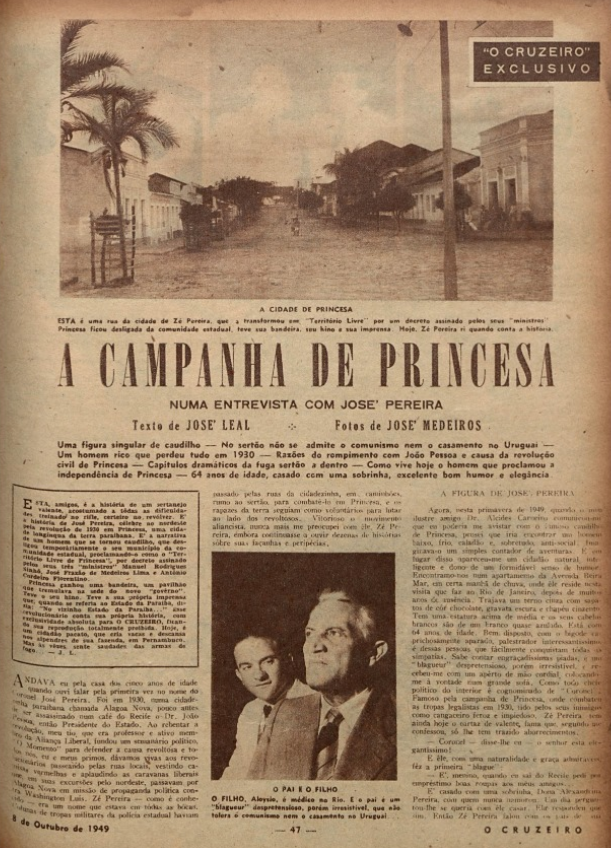

Documentos
Esta seção apresenta uma coleção de documentos contendo tipos como manuscritos, ofício, portaria e outros. Explore os registros disponíveis com o auxílio das ferramentas de filtro abaixo.
Exibindo as submissões mais recentes.
Agora exibindo n de n

Documento
TELEGRAMA 313
Acervo FCJA
Telegrama de José Fábio da Costa Lyra, secretário da cidade de Bananeiras-PB, comunicando ao Chefe do Governo Revolucionário (José Américo de Almeida) acerca da adesão do coronel José Antônio Ferreira da Rocha e de sua família aos ideias revolucionários.
Mostrar mais

Documento/Entrevista
Entrevista com José Pereira
O Cruzeiro (RJ)
Entrevista com José Pereira que desligou o município paraibano de Princesa da comunidade estadual e o proclamou independente.
Mostrar mais